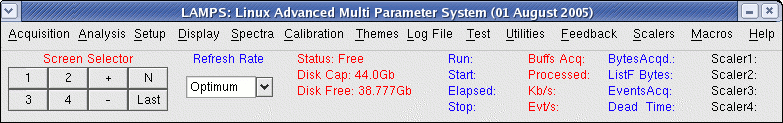

The status information fields are arranged in 5 columns. The first column (in red) gives:
Status: This is the program status. It shows one of the following states:
Status: Free
Status: Acquiring or Acq. On
Status: Paused
Status: Build x of y
During CAMAC acquisition, the status is Acquiring or Acq. On. If CAMAC acquisition has been paused, the status is Paused When acquisition is stopped, the status will return to Free During offline analysis, the status shows Build x of y where x is the file number currently being analysed out of the total y files which are to be analysed.
Disk Cap: This is the capacity of the hard disk. (In case of multiple hard disks the capicity of the disk from where the program has been started is shown. There should be no confusion on this ground since the output list file will be written to this disk).
Disk Free: An important status indicator when list mode data is being acquired. One must keep a close watch here when running out of disk space. The units for the display will automatically change from Gb to Mb down to Kb as the disk fills.
A:The file is closed properly and the run is stopped. The user is informed about this by a box which appears on the screen.
Q:What about the spectra files in this case? A:The spectra files may not have been written. However since the
program will not have crashed, the user can open another terminal window, delete or backup
unwanted files and manually save the spectra (Spectra - Save Spectra from the menu bar).
Run: This shows the current run name during acquisition. For offline analysis it shows the name of the current file being analysed.
Start: The start time of the current run
Elapsed: The elapsed time of the current run
Stop: This will be initially blank till the run is stopped. After that, the stop time is displayed. When the next run starts, then the stop time of the previous run is displayed here (marked "Prev. Stop").
Buffs Acq.: Shows the number of data buffers acquired. During offline analysis it shows the number of data buffers processed from the file.
Processed: During acquisition, it shows the number of data buffers from which spectra were built. If all is well, this number should be the same as the buffers acquired. However if the user has decided to do a lot of processing (large number of spectra or large number of gates etc.) then the number appearing here will be less. It is rarely advisable to run acquisition under these circumstances. The user should reduce the number of spectra being built, gates etc. Heavy processing can be left for offline analysis.
For offline analysis, this status field is changed in meaning. (Here there is no question of losing buffers. The data are read from the file and fully processed, no matter how much time it takes.) Instead, we display here the progress of the analysis as a percentage value.
Kb/s: During acquisition, displays the acquisition speed. This is explained in the following
example:
Consider an 8 parameter experiment running at 1000 events/s. Each parameter (data word) consists of
2 bytes. The acquisition speed would be 16Kb/s. Thus Kb/s is related to Evt/s (below) by a factor
of (2*Number of Parameters)/1024.
In this field we also display the differential rate in brackets. In fact for in-beam experiments, the differential rate is more meaningful in view of beam current fluctuations.
For offline analysis, this field has a different meaning. Here the speed is displayed in terms of the bytes read from the file. Since the file consists of compressed data, this is not the same thing.
Evt/s: During acquisition, it shows the event rate. Once again the differential rate is displayed in brackets. For offline analysis, it shows the rate at which events are being analysed.
For online acquisition, the fields have the following meanings:
Bytes Acqd.: The total number of bytes acquired ( = Kb/s * Elapsed_Time)
ListF Bytes: The actual size of the list mode file (equivalent to the ls -l command). This figure will be smaller than that in Bytes Acqd. due to the compression employed. The ratio of the two figures gives the amount of compression taking place and would depend upon the nature of the data and the file format (an option in the Setup).
Events Acq: The total number of events acquired ( = Evt/s * Elapsed_Time)
Dead Time: This field can be displayed only if a CAMAC scaler has been set up and this scaler has been named "Masters". The actual number events is obtained from this scaler and the dead time is calculated by the program as 100*(Actual_Events - Recorded_Events)/Actual_Events. When gate blocking is employed as in a multi crate system, the unblocked events should be recorded in the "Masters" scaler.
For offline analysis, the fields change:
Bytes: Shows the (compressed) bytes from the file that have been analysed.
File Bytes: The size of the file being analysed.
The progress of the analysis can be judged from these two figures.
As can be seen, though the status fields look similar, they have different meanings in the context of acquisition and analysis. However this should not cause any confusion.
When CAMAC scalers are in use, the values are displayed here. The values are continuously updated simulating the LED display of a conventional scaler. Note that only 4 scalers are displayed here. When there are more scalers, and also to get the integral and differential rates click Scalers in the main menu.